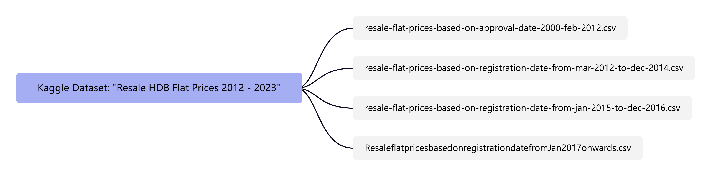
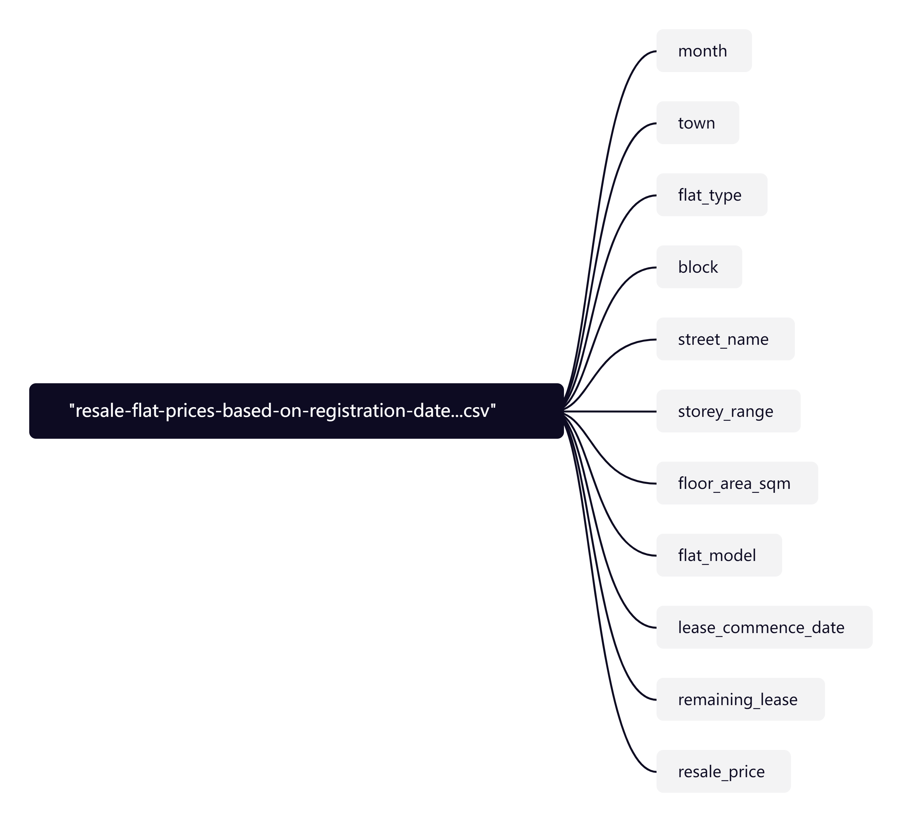
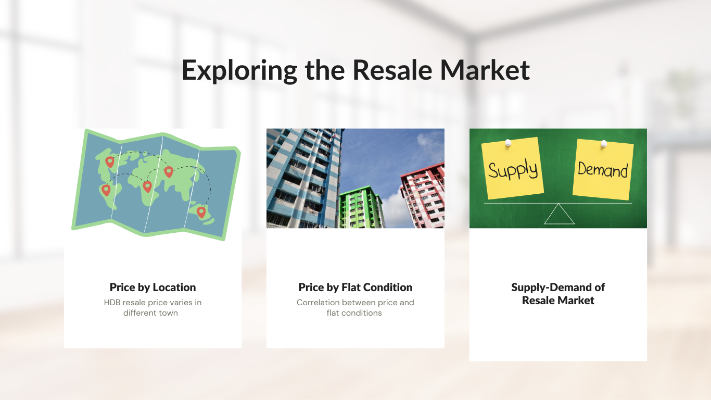
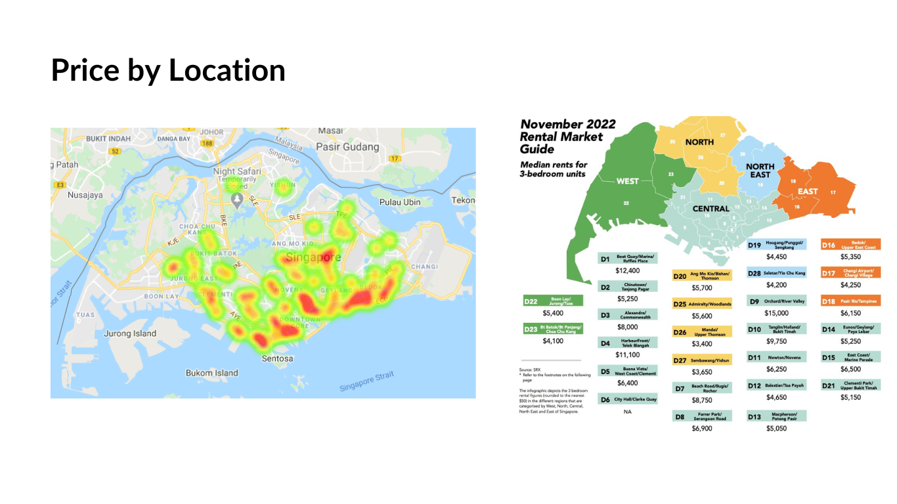
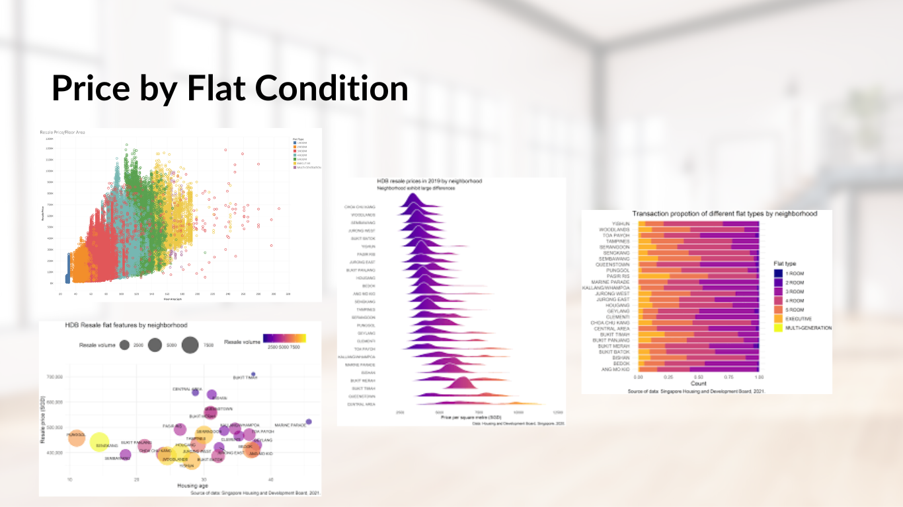
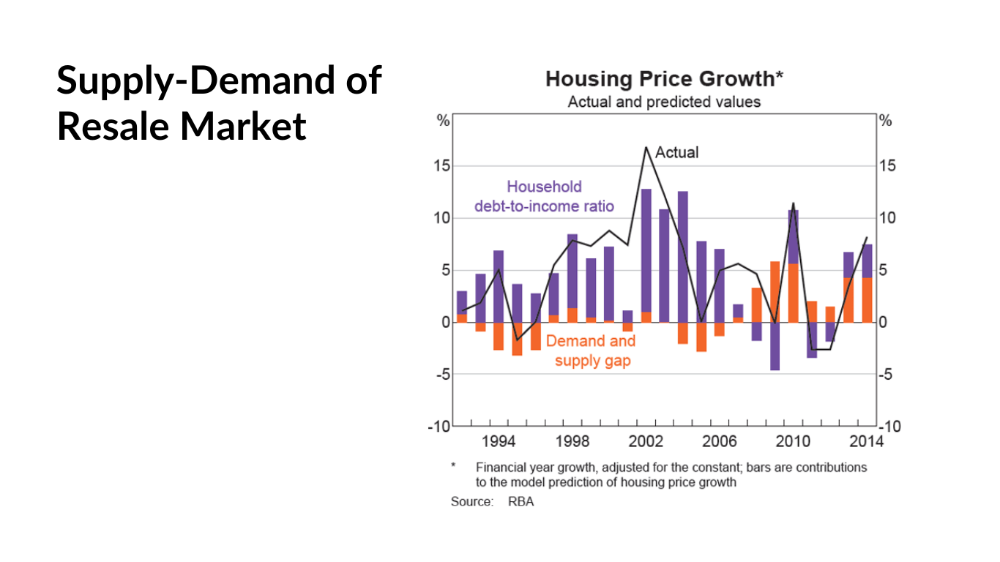
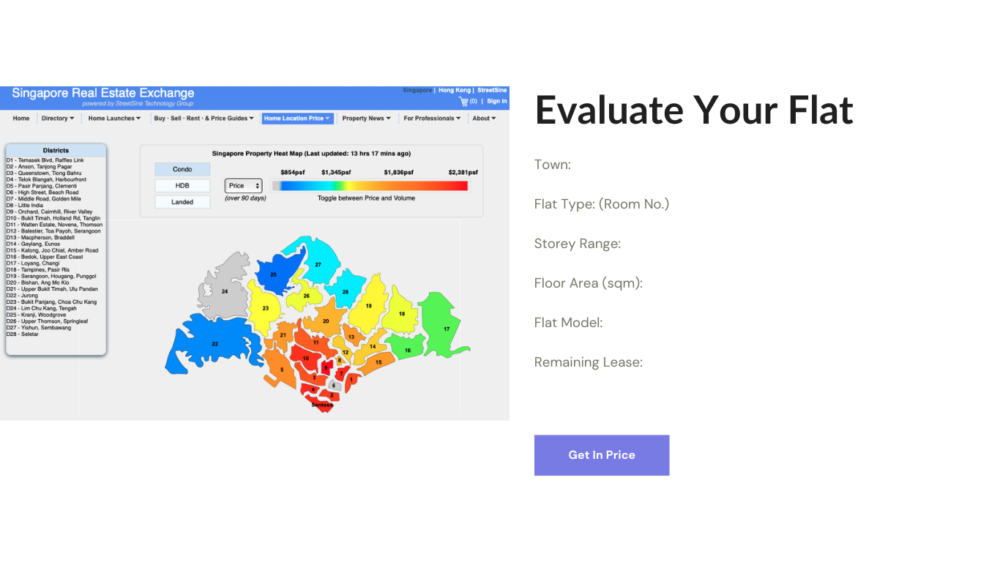

How Much is Your HDB Valued?
Exploring Influential Factors on HDB Resale Prices and Predicting Price Trends
1. Project Overview
In Singapore, the real estate market, especially the resale market of Housing and Development Board (HDB) flats, is closely monitored. Changes in resale flat prices have significant implications for residents, investors, and policymakers.
According to HDB data, resale flat prices increased by 4.8% in 2023, a slower growth compared to the 10.4% increase in 2022. Factors such as government policies and shifting buyer preferences may have influenced this trend.
Despite a decline in resale market transactions, HDB resale flat prices remain resilient, with some properties fetching high prices. Competition from other housing options, like Build-to-Order flats, may impact demand.
Understanding the factors affecting HDB resale flat prices and predicting future trends is crucial for stakeholders. This project aims to analyze market influences and use machine learning to forecast prices, providing valuable insights.
2. Motivation Behind the Tasks
This project aims to understand and predict trends in Housing and Development Board (HDB) resale prices in Singapore’s real estate market. It’s crucial for homebuyers to make informed decisions, for current owners to assess property value accurately, and for investors to optimize their portfolios. Policymakers also rely on this data to formulate effective housing policies promoting market stability and affordability. Ultimately, this project seeks to empower stakeholders with actionable insights, contributing to a more transparent and efficient real estate market in Singapore.
3. Data Source
Two data sets will be used in this project:
“resale-flat-prices-based-on-registration-date-from-jan-2010-to-Jan-2024.csv” is sourced from Kaggle.
Overview of the datasets:

inside each CSV file, the variables are:

4. Proposed Methodology

4.1 Influential Factors on HDB Resale Prices
Exploratory Data Analysis(EDA) via Data Visualization
Exploratory Data Analysis (EDA) is a crucial step in understanding the structure, patterns, and relationships within a dataset. Data visualization plays a significant role in EDA as it allows us to visually explore the data, identify trends, patterns, outliers, and relationships between variables. Here’s a general outline of the EDA process via data visualization for the provided dataset:
Data Cleaning and Preprocessing:
- Handle missing values: Check for missing values in each column and decide how to handle them (e.g., imputation, deletion).
- Data type conversion: Ensure that data types are appropriate for analysis (e.g., converting categorical variables to categorical data type).
- Check for duplicates: Identify and remove any duplicate records if present.
Univariate Analysis:
- univariate analysis examines individual variables to understand their distributions. For numerical variables such as floor area, remaining lease, and resale price, histograms are useful to visualize their spread and skewness. Categorical variables like flat type and location can be analyzed using bar plots to show frequency counts.
Bivariate Analysis:
- Scatter plots: Analyze the relationship between numerical variables like resale_price and floor_area_sqm or remaining_lease to understand if there’s any correlation.
- Box plots: Compare the distribution of resale_price across different categories like flat_type or location to identify any variations or outliers.
- Heatmaps or Correlation plots: Visualize the correlation matrix between numerical variables to identify correlations among them.
Pattern analysis
- Temporal analysis focuses on understanding trends over time. Time series plots can reveal patterns in resale prices over months, while heatmaps or line plots display variation across different time periods and locations.
- Geospatial analysis adds a spatial dimension to the exploration. Plotting resale prices on a map allows visualization of spatial distribution and identification of any regional patterns or clusters.
The dataset on resale flat prices based on registration date encompasses various factors that influence property resale prices. Given the complexity of the real estate market, which is subject to fluctuations influenced by factors such as economic conditions, location, and property characteristics, conducting sensitivity analysis through visualization is paramount.
By considering variables such as the trend in resale prices over time, the impact of location on prices, and potential outliers or influential data points, visualizing the dataset can facilitate the identification of key insights. This analysis may include examining the effects of market trends, government policies related to housing, and other socio-economic factors on resale prices. This approach enables informed decision-making for individuals considering property investment.
4.2 Predicting Price Trends
Through the proposed methodology outlined below, we aim to develop accurate and reliable predictive models capable of effectively forecasting HDB resale flat prices, thus providing actionable insights to stakeholders and facilitating informed decision-making in the Singapore real estate market.
- Data Preparation
First, divide the available dataset into training, validation, and testing sets with a typical split of 80% for training, 10% for validation, and 10% for testing. Then, utilize feature selection techniques to identify the most influential variables affecting HDB resale flat prices, aiding in simplifying analysis and enhancing model accuracy.
- Model Development
First, explore various machine learning algorithms such as regression analysis, decision trees, and ensemble methods to develop models for predicting HDB resale flat prices. Then, train the models on the training set using historical data and evaluate them using techniques like cross-validation.
- Model Evaluation
Use metrics such as Mean Absolute Error (MAE), Root Mean Square Error (RMSE), and R-squared to evaluate the performance of predictive models.
- Model Interpretation
First, analyze the interpretability of models, which is crucial for understanding the driving factors behind HDB resale flat prices. Employ techniques like feature importance analysis and partial dependence plots to interpret models and identify key insights. Then, validate predictive models using the validation set to ensure their robustness and generalization ability. Make necessary improvements or adjustments based on validation results to enhance model performance.
- Prediction
Use validated models to forecast future trends in HDB resale flat prices. These predictions will provide valuable insights to stakeholders, enabling them to make informed decisions in the dynamic real estate market environment.
5. Rshiny Demo
Our R Shiny app primarily serves to acquaint users with the HDB resale market in Singapore from various angles and assist them in predicting the price of their own flat should they wish to sell it.
The images below depict the ideal R Shiny app that we aim to develop.




